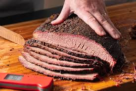

Slow Cooker Brisket

Ingredients
- Beef Brisket - 3-4 lbs
- Olive Oil - 1 Tbsp
Rub
- Brown Sugar - 1 Tbsp
- Paprika Powder - 2 tsp
- Onion Powder - 1 tsp
- Cumin Powder -1 tsp
- Mustard Powder - 3/4 tsp
- Salt- 1 tsp
- Black Pepper - 1/2 tsp
BBQ Sauce
- Minced Garlic - 2 Cloves
- Apple Cider Vinegar - 1/2 cup
- Ketchup - 1 1/2 cup
- Brown Sugar - 1/2 cup
- Black Pepper - 2 tsp
- Onion Powder - 2 tsp
- Mustard Powder - 2 tsp
- Cayenne Pepper - 1 tsp
- Worcestershire Sauce - 1 Tbsp
Instructions
- Mix Rub ingredients. Rub all over brisket. If time permits, leave for 30 minutes – 24 hours in the fridge, but I rarely do this.
- Combine BBQ Sauce ingredients in a slow cooker. Mix then add the brisket – squish it in if needed
- Slow cook in slow cooker for 8 hours (1.5 kg / 3 lb) to 10 hours (2 kg / 4 lb)
- Remove brisket onto a tray.
- Pour liquid in slow cooker into a saucepan. Bring to simmer over medium high heat and reduce until it thickens to a syrup consistency (it thickens more as it cools).
- Meanwhile, drizzle brisket with oil then roast in a 200C/390F oven for 15 minutes until brown spots appear. Remove then baste generously with Sauce, then return to oven for 5 minutes. Remove and baste again, then return to oven for 5 – 10 minutes until it caramelises
- TO SERVE: Slice brisket thinly across the grain and serve with remaining BBQ Sauce.